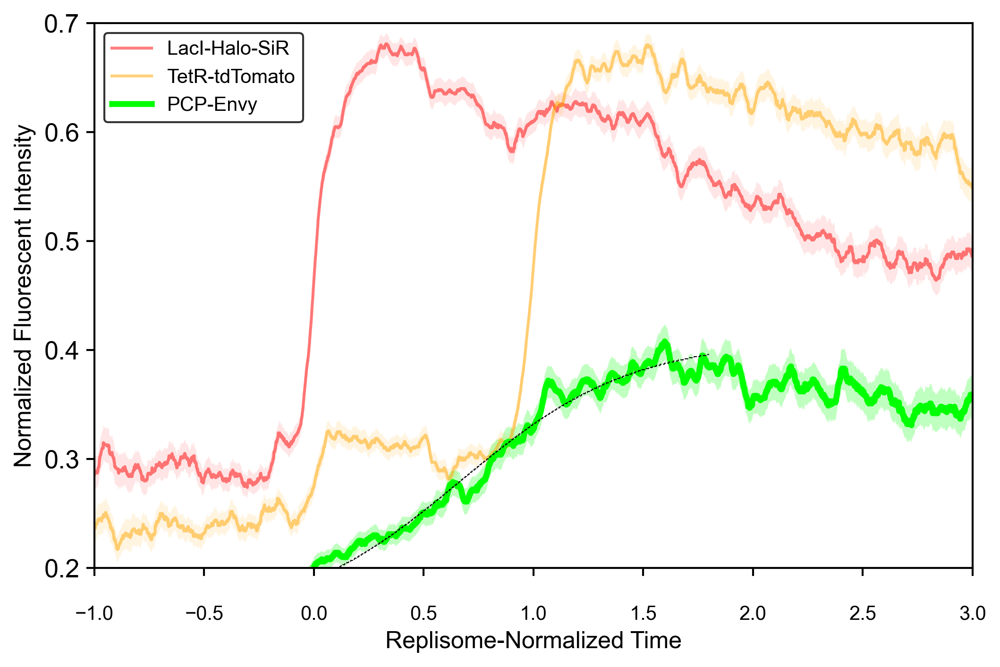

PlotRNSA Script Documentation
The PlotRNSA script generates a summary plot from an RNSA file using Matplotlib. It visualizes RNSA data with color-coded channels, mean values, standard error margins, and optional sigmoid fits. This script helps analyze replication dynamics and compare replication timing across experimental conditions.
Key Tasks
- Read Input Files
- Reads the 'RNSA' file and processes the RNSA Summary sheet from the Excel file.
- Generate Fluorescence Intensity Plot
- Plots mean fluorescence intensity for each channel.
- Adds SEM shading to indicate uncertainty.
- Includes Sigmoid Curve (if available) – If the Sigmoid column is present in the RNSA file (generated by the RNSAsigmoid script), it is plotted as a dashed black line.
- Customizes plot appearance – Adjusts colors, line thickness, transparency, axis labels, and limits.
- Save the Output Plot
- The script saves the plot as a PNG file in the same directory as the input file.
How to Use PlotRNSA
Step 1: Edit Parameters in the Script
Modify the script parameters to customize the input file, appearance, and output.
• Specify the RNSA File Location
Define the folder and filename of the RNSA file:
rnsa_folder = r'path_to_your_folder'
rnsa_filename = 'your_rnsa_file.xlsx'
• Configure Plot Appearance
Customize how the plot is displayed. Adjust colors, line widths, transparency, axis limits, and labels:
# Channel settings
channel_colors = ['red', 'orange', 'lime'] # Colors for each channel
channel_line_widths = [1.5, 1.5, 3] # Line thickness for each channel
line_transparency = [0.5, 0.5, 1] # Line transparency
shade_transparency = [0.1, 0.12, 0.25] # SEM shading transparency
# Axis settings
rnsa_x_axis = [-1, 3] # X-axis range
rnsa_y_axis = [0.2, 0.7] # Y-axis range
# Labels
legend_labels = ['LacI-Halo-SiR', 'TetR-tdTomato', 'PCP-Envy'] # Legend labels
rnsa_x_name = 'Replisome-Normalized Time' # X-axis label
rnsa_y_name = 'Normalized Fluorescent Intensity' # Y-axis label
Step 2: Run the Script
After editing the parameters:
• Save the script.
• Run the script in a Python environment (command line, Jupyter Notebook, or PyCharm).
Step 3: Output Files
The script generates a PNG image of the RNSA plot in the same folder as the input file:
• your_rnsa_file - RNSA.png
Example Configuration
Below is a sample configuration to visualize fluorescence intensity curves for three channels:
""" Parameters """
# Location and filename of the relevant RNSA file.
rnsa_folder = r'C:\Project\Merged_Results'
rnsa_filename = 'Merged_Project_Results - RNSA.xlsx'
# Color of each channel (in the order they appear in the RNSA file).
channel_colors = ['red', 'orange', 'lime']
# Relative width of line for each channel.
channel_line_widths = [1.5, 1.5, 3]
# Line transparency for each channel (0-transparent, 1-opaque).
line_transparency = [0.5, 0.5, 1]
# SEM shading transparency for each channel (0-transparent, 1-opaque).
shade_transparency = [0.1, 0.12, 0.25]
# Bottom and top limits on the X axis displayed in the chart.
rnsa_x_axis = [-1, 3
# Bottom and top limits on the Y axis displayed in the chart.
rnsa_y_axis = [0.2, 0.7]
# Labels to be displayed in the legend. If empty, legend will not be displayed.
legend_labels = ['LacI-Halo-SiR', 'TetR-tdTomato', 'PCP-Envy'
# Axis names.
rnsa_x_name = 'Replisome-Normalized Time'
rnsa_y_name = 'Normalized Fluorescent Intensity'
Expected Output
• C:\Project\Merged_Results\Merged_Project_Results - RNSA.png
Replisome-Normalized Signal Averaging Plot
Figure: Example of Replisome-Normalized Signal Averaging Plot generated by the PlotRNSA script
By following these steps, you can efficiently generate and customize fluorescence intensity plots from RNSA data.